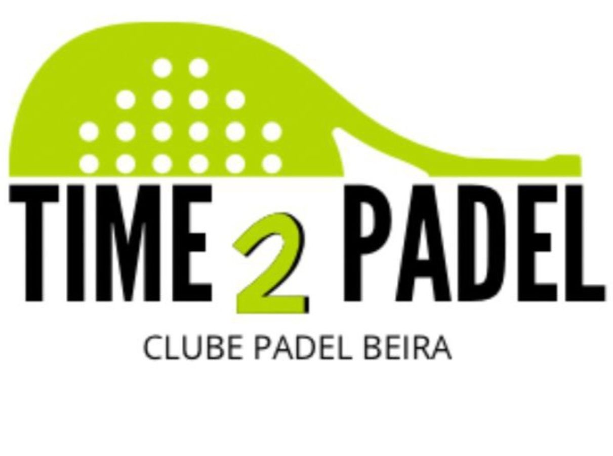
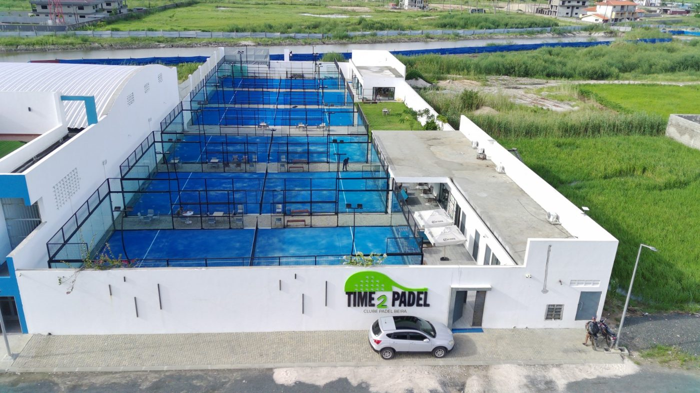
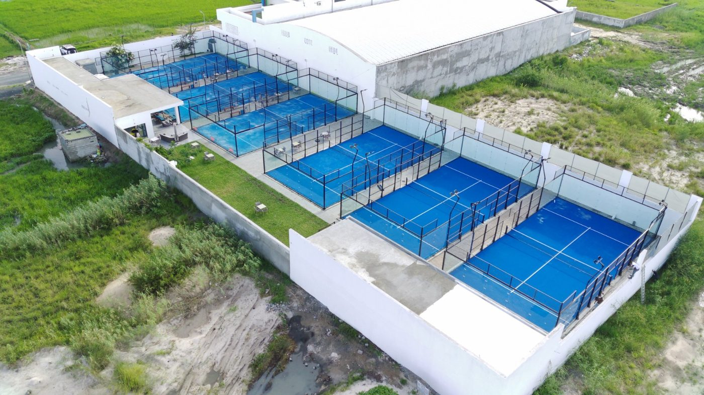

Bem-vindo ao Time2Padel
Compete, joga e acompanha o ranking do nosso clube.
🎾 O nosso clube
Um espaço dedicado ao padel e à comunidade Time2Padel em Beira.


Clube de Padel Beira · Moçambique

Compete, joga e acompanha o ranking do nosso clube.
Um espaço dedicado ao padel e à comunidade Time2Padel em Beira.

